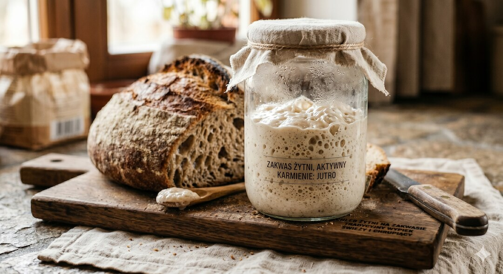
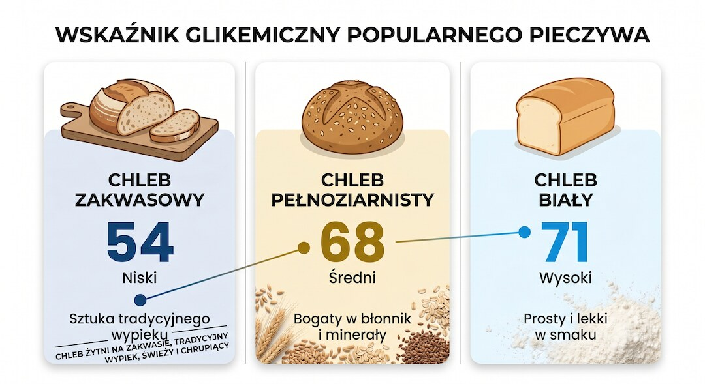
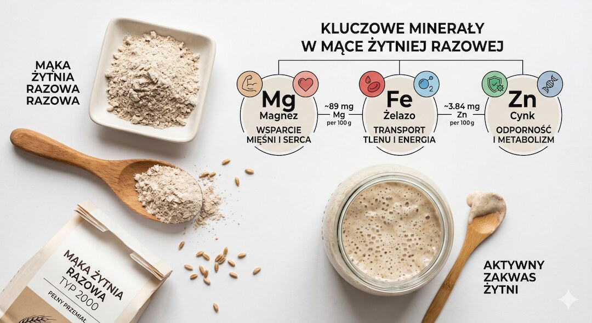
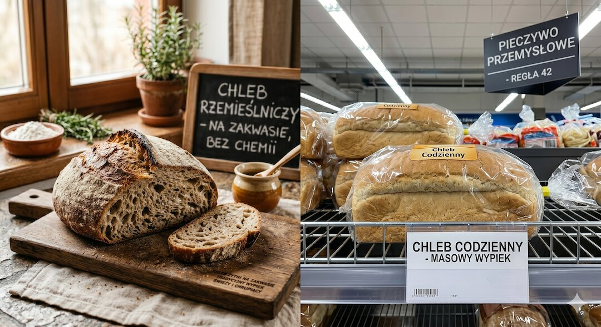
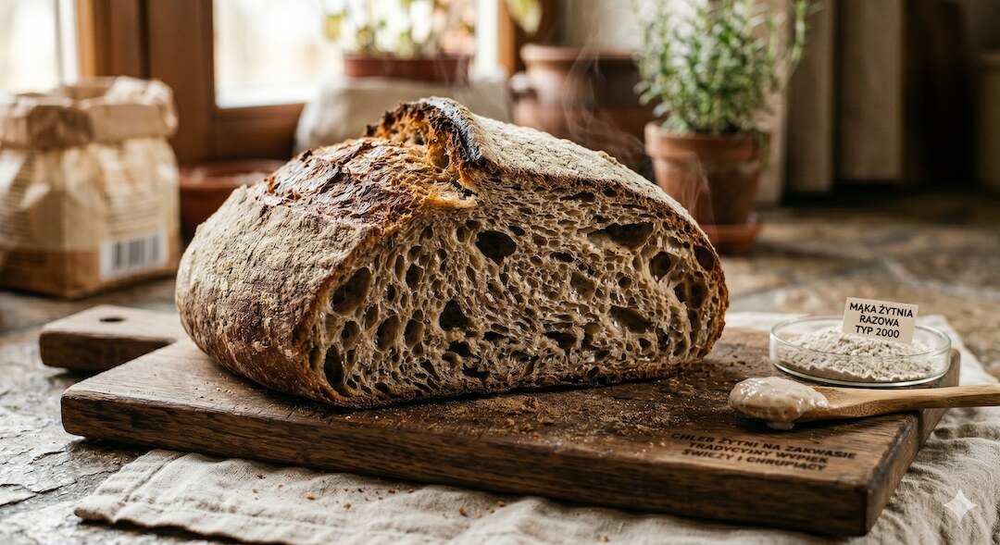
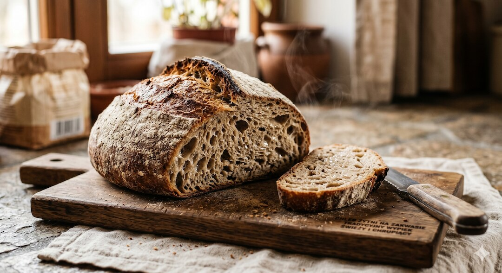

Chleb na zakwasie wrócił do łask. Nie dlatego, że ktoś go wymyślił na nowo, ale dlatego, że nauka zaczęła potwierdzić to, co wiedzieli już nasi dziadkowie: długa fermentacja robi z mąki coś zupełnie innego niż drożdże ze sklepu. Czy naprawdę wolniej podnosi cukier? Czy nie tuczy tak samo jak zwykłe pieczywo? Sprawdzam, co mówią badania.
Szybka odpowiedź
Prawdziwy chleb na zakwasie może być lepszym wyborem po pięćdziesiątce, jeśli powstaje z mąki żytniej lub pełnoziarnistej i fermentuje 12–72 godziny, bo ma zwykle niższy indeks glikemiczny, około 54 zamiast 71 dla białego chleba, ale przy celiakii nadal jest zawsze wykluczony, ponieważ zawiera gluten.
Kluczowe wnioski
- Chleb na zakwasie ma niższy indeks glikemiczny (ok. 54) niż biały chleb (ok. 71) – potwierdzają to badania z 2024 roku.
- Korzyści zależą od mąki: zakwas z mąki pełnoziarnistej lub żytniej działa znacznie lepiej niż zakwas z oczyszczonej pszenicy.
- Fermentacja rozkłada kwas fitynowy, przez co magnez, żelazo i cynk wchłaniają się lepiej – dotyczy to zwłaszcza mąki razowej.
- Zakwas ze sklepu to często skrót: krótka fermentacja lub drożdże zamiast dzikich bakterii niszczą większość zalet zdrowotnych.
Czym właściwie różni się zakwas od drożdży?
Zakwas to żywy ekosystem: mieszanka wody i mąki, w której działają dzikie drożdże oraz bakterie kwasu mlekowego (LAB – Lactic Acid Bacteria ). Fermentacja trwa od 12 do nawet 72 godzin. W tym czasie bakterie przetwarzają cukry w kwas mlekowy i octowy, obniżają pH ciasta i wstępnie trawią część składników mąki. Chleb na drożdżach piekarskich wyrasta w zaledwie 1–2 godziny, więc bakterie nie mają czasu na działanie.
To kluczowa różnica: nie chodzi o smak ani tradycję, ale o chemię zachodzącą w cieście. Kwasy organiczne powstałe podczas fermentacji zakwasowej zmieniają strukturę skrobi, degradują antyodżywcze fityny i częściowo rozkładają gluten. Szybka fermentacja drożdżowa tego nie robi. Dlatego porównanie chleba na zakwasie z chlebem na drożdżach to zestawienie dwóch zupełnie różnych produktów.

Czy chleb na zakwasie naprawdę ma niższy indeks glikemiczny?
Tak – ale z zastrzeżeniami. Przegląd badań z 2024 roku opublikowany w Critical Reviews in Food Science and Nutrition potwierdza, że chleb na zakwasie obniża poposiłkowy poziom glukozy we krwi w porównaniu z chlebem drożdżowym. Indeks glikemiczny (IG) zakwasowego chleba pszennego wynosi około 54, podczas gdy biały chleb drożdżowy osiąga 71, a zwykły pełnoziarnisty około 68. To różnica mająca duże znaczenie metaboliczne.
Mechanizm ten jest dobrze opisany: kwasy organiczne spowalniają opróżnianie żołądka i hamują działanie enzymów trawiennych rozkładających skrobię. Dodatkowo fermentacja zwiększa zawartość korzystnej skrobi opornej. Efekt to wolniejsze uwalnianie węglowodanów do krwi i łagodniejszy wyrzut insuliny. Osoby dbające o masę ciała po pięćdziesiątce szybko odczują tę różnicę. Warto zerknąć też na przewodnik po ukrytym cukrze w jedzeniu.
Warto jednak pamiętać o indywidualnych różnicach. Badanie opublikowane w Cell Metabolism (2019) wykazało, że odpowiedź glikemiczna na chleb zakwasowy vs drożdżowy zależy od konkretnej osoby i składu jej mikrobiomu jelitowego. U niektórych zakwas dawał znacznie mniejszy skok cukru, u innych różnica była znikoma. Statystyczna korzyść grupowa nie zawsze przekłada się na identyczny efekt u każdego z nas.

Co z insuliną – czy zakwas naprawdę mniej obciąża trzustkę?
Badania na osobach z zaburzoną tolerancją glukozy pokazują, że chleb na zakwasie z fermentacją mlekową znacząco poprawia odpowiedź insulinową po posiłku. Badanie opublikowane w Wien Klin Wochenschr (2023) na kobietach z cukrzycą ciążową wykazało, że zwykły chleb pszenny wywołuje aż o 45,5% wyższe wydzielanie insuliny i o 9,6% wyższy poziom glukozy po godzinie w porównaniu z pełnoziarnistym zakwasem pszenicznym.
Ważne zastrzeżenie: systematyczny przegląd z 2024 roku potwierdza redukcję poposiłkowej glikemii, ale zaznacza, że zakwas nie obniża insuliny na czczo ani nie resetuje metabolizmu na stałe. Działa bezpośrednio po posiłku, stanowiąc lepszy wybór w codziennej diecie. Aby lepiej zrozumieć, jak organizm zarządza energią, przeczytaj artykuł o biologii spalania tłuszczu po pięćdziesiątce.
Co dzieje się z kwasem fitynowym i przyswajaniem minerałów?
Kwas fitynowy (fitynian) jest naturalnym składnikiem zbóż – występuje szczególnie w otrębach i pełnoziarnistych mąkach. Wiąże on magnez, żelazo, cynk oraz wapń, przez co organizm nie może ich wchłaniać. Bakterie kwasu mlekowego w zakwasie aktywują jednak enzym fitazę, który rozkłada te związki. Dzięki temu z bochenka pełnoziarnistego przyswajasz znacznie więcej minerałów niż ze zwykłego pieczywa drożdżowego.
Niektóre badania wykazują, że fermentacja zakwasowa degraduje nawet ponad 95% kwasu fitynowego. To kluczowe, gdyż niedobory magnezu i cynku są częste u osób po pięćdziesiątce, a magnez bezpośrednio reguluje wydzielanie insuliny. Pamiętaj jednak, że ten efekt dotyczy głównie pieczywa razowego i żytniego – w oczyszczonej białej mące fitynianów jest niewiele, więc korzyść z zakwasu jest tam znikoma.

Mity o zakwasie: co jest prawdą, a co marketingiem?
Mit 1: Zakwas jest bezglutenowy. Absolutnie nie – chleb na zakwasie zawiera gluten i jest całkowicie wykluczony przy celiakii. Choć fermentacja częściowo degraduje białka glutenowe, co ułatwia trawienie osobom z nieceliakalną nadwrażliwością na gluten (NCGS), łatwiejsza strawność nie oznacza bezpieczeństwa dla osób chorych. Brak jest danych klinicznych potwierdzających, że zakwas eliminuje szkodliwość glutenu.
Mit 2: Zakwas z supermarketu to to samo. To powszechna pułapka. Prawdziwe pieczywo wymaga wielogodzinnej pracy bakterii. Tymczasem spora część chlebów z supermarketów powstaje na bazie drożdży piekarskich, do których producent dodaje sztuczny kwas mlekowy (E270) dla uzyskania kwaśnego smaku. Taki produkt nie przeszedł długiej fermentacji i nie posiada opisanych zalet zdrowotnych.
Mit 3: Zakwas to probiotyk. Niezupełnie. Wysoka temperatura wypieku (powyżej 90 stopni) zabija pożyteczne bakterie. Zakwas działa więc prebiotycznie: dostarcza kwasów organicznych oraz błonnika, które stanowią doskonałą pożywkę dla naszych własnych bakterii jelitowych. Więcej o wspieraniu mikroflory i wpływie substancji roślinnych dowiesz się z artykułu o lektynach i fitynianach w diecie.
Mit 4: Zakwas żytni i pszenny działają tak samo. To błąd. Badanie z 2024 roku oceniające 23 rodzaje pieczywa wykazało, że chleby żytnie i owsiane na zakwasie stabilizowały glukozę znacznie lepiej niż zakwasowy chleb z białej mąki pszennej. Wybór odpowiedniego ziarna ma równie duże znaczenie dla zdrowia co sam proces fermentacji.

Jakie ciekawostki o zakwasie naprawdę zaskakują?
Zakwas z San Francisco ma własny, unikalny gatunek bakterii. Fructilactobacillus sanfranciscensis to szczep odpowiedzialny za charakterystyczny ostry, pikantny smak tamtejszych chlebów. Mikrobiom zakwasu zmienia się w zależności od lokalizacji geograficznej, temperatury otoczenia, wody oraz użytej mąki. Z tego powodu dokładnie ten sam przepis da zupełnie inny wypiek w Krakowie, a inny w Lizbonie czy San Francisco.
Fermentacja aktywuje antyoksydanty. Bakterie kwasu mlekowego uwalniają bioaktywne peptydy neutralizujące wolne rodniki. Badania wskazują, że potencjał przeciwutleniający chleba na zakwasie może być znacznie wyższy niż pieczywa niefermentowanego. To ważne działanie wspomaga ochronę komórkową przed stresem oksydacyjnym i spowalnia procesy starzenia.
Osoby z zespołem jelita drażliwego (IBS) często zgłaszają lepszą tolerancję zakwasu. Badania kliniczne potwierdzają, że długa fermentacja redukuje poziom fermentujących cukrów (FODMAP) drażniących jelita. Jeśli chcesz wprowadzić menu łagodzące dolegliwości układu pokarmowego, przeczytaj wskazówki w naszym przewodniku po diecie przeciwzapalnej po 50.

Jak wybrać dobry chleb na zakwasie i ile go jeść po 50-tce?
Skład na etykiecie nie kłamie – o ile potrafisz go prawidłowo czytać. Prawdziwy tradycyjny chleb powinien zawierać tylko mąkę, wodę, sól oraz zakwas. Brak drożdży piekarskich w składzie jest najlepszym znakiem jakości. Obecność kwasu mlekowego (E270) lub octowego zamiast zakwasu to sygnał alarmowy świadczący o sztucznym zakwaszaniu ciasta w celu przyspieszenia produkcji.
Jedna kromka chleba żytniego (około 40 g) to około 16 g węglowodanów. Zawsze łącz ją z białkiem (np. chudy twaróg, ryba) i zdrowszym tłuszczem (awokado, oliwa) – takie połączenie wydłuży sytość i zminimalizuje skoki cukru. Optymalna porcja dla aktywnej osoby po 50-tce to 1–2 kromki dziennie. Więcej o zbilansowanym menu przeczytasz w naszym artykule o diecie po pięćdziesiątce.

Najczęściej zadawane pytania
Czy chleb na zakwasie jest bezpieczny dla cukrzyków?
Może być lepszym wyborem niż biały chleb drożdżowy, ponieważ ma niższy indeks glikemiczny i wywołuje mniejszy skok insuliny. Badania kliniczne wykazują, że pełnoziarnisty zakwas pszenny lub żytni powoduje o ponad 45% mniejszy wyrzut insuliny po posiłku. Należy jednak pamiętać, że chleb nadal dostarcza węglowodanów i nie zastępuje leczenia. Cukrzycy powinni kontrolować wielkość porcji i konsultować dietę z diabetologiem.
Czy chleb na zakwasie można jeść przy IBS?
Tak, ale tolerancja zależy od rodzaju mąki i długości fermentacji. Tradycyjna długa fermentacja zakwasowa rozkłada znaczną część węglowodanów FODMAP, co ułatwia trawienie. Chleb żytni na zakwasie może jednak nadal zawierać zbyt dużo FODMAP dla osób z dużą wrażliwością. Przy problemach jelitowych zaleca się ostrożne testowanie mniejszych porcji.
Czy chleb na zakwasie zawiera probiotyki?
Nie, chleb po upieczeniu nie zawiera żywych komórek probiotycznych, ponieważ wysoka temperatura w piecu (powyżej 90°C) całkowicie zabija bakterie i drożdże. Zakwas wykazuje jednak silne działanie prebiotyczne. Zawarte w nim kwasy organiczne i skrobia oporna odżywiają naturalną mikroflorę jelitową i stymulują jej rozwój.
Czy zakwas z supermarketu ma te same właściwości?
Najczęściej nie. Masowo produkowany chleb w supermarketach jest wypiekany z użyciem drożdży piekarskich, a specyficzny, kwaśny smak uzyskuje się przez dodanie kwasu mlekowego z butelki (E270). Taki produkt nie przechodzi tradycyjnej, wielogodzinnej fermentacji, dlatego nie wykazuje korzyści prozdrowotnych prawdziwego zakwasu.
Czy chleb na zakwasie można jeść przy nietolerancji glutenu?
To zależy od stopnia nadwrażliwości. Przy celiakii tradycyjny chleb na zakwasie jest całkowicie zabroniony, ponieważ nadal zawiera gluten. W przypadku nieceliakalnej nadwrażliwości na gluten długa fermentacja bakteryjna częściowo degraduje białka glutenowe, co sprawia, że pieczywo to może być znacznie łatwiej strawne i lepiej tolerowane.
Źródła
- Frontiers in Nutrition (2023): Czy chleb na zakwasie daje kliniczne korzyści zdrowotne? Przegląd dowodów
- PubMed: Przegląd systematyczny – zakwas a kontrola glikemii i sytość (Critical Reviews in Food Science and Nutrition, 2024)
- Applied Sciences (2024): Wpływ 23 rodzajów pieczywa funkcjonalnego na poposiłkową glikemię u 209 zdrowych dorosłych
- Wien Klin Wochenschr (2023): Odpowiedź glikemiczna na pełnoziarnisty chleb na zakwasie vs biały chleb pszenny u pacjentek z cukrzycą ciążową
- PubMed: Chleb na zakwasie poprawia poposiłkową glikemię i insulinemię u osób z zaburzoną tolerancją glukozy
- PMC: Ostra odpowiedź insulinowa i glikemiczna po spożyciu różnych chlebów u mężczyzn z nadwagą (RCT crossover)
- ResearchGate (2024): Wpływ mikrobioty zakwasu na zawartość FODMAP i ATI w pieczywie
- Real Bread Campaign (2023): Obalamy mity o zakwasie: kwas fitynowy i FODMAP
- PMC: Komentarz do badań nad degradacją ATI przez zakwas i odpowiedzią zapalną
Uwaga: Artykuł ma charakter informacyjny i edukacyjny. Nie zastępuje konsultacji lekarskiej, diagnozy ani leczenia.